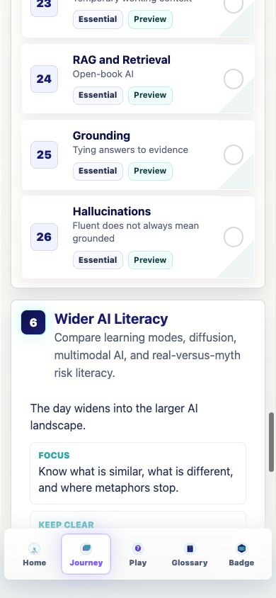
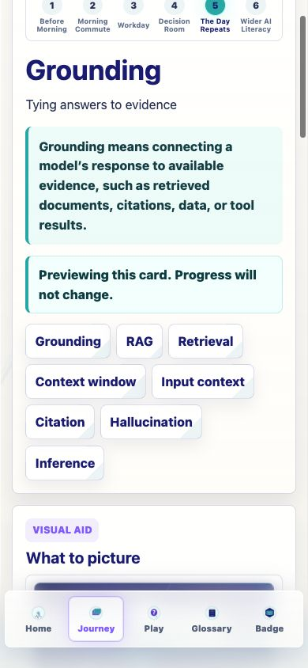
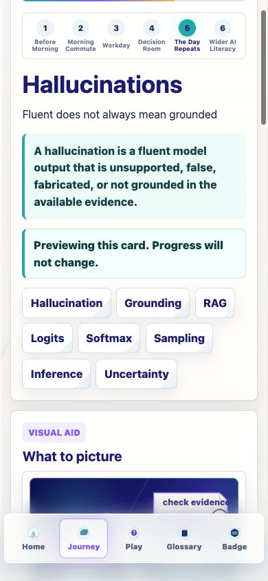
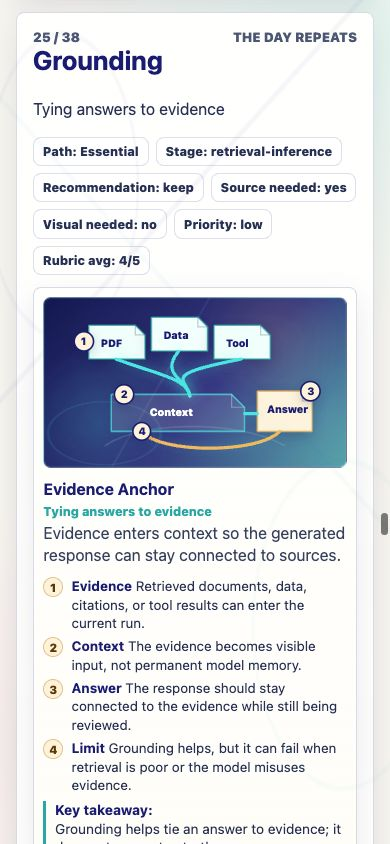
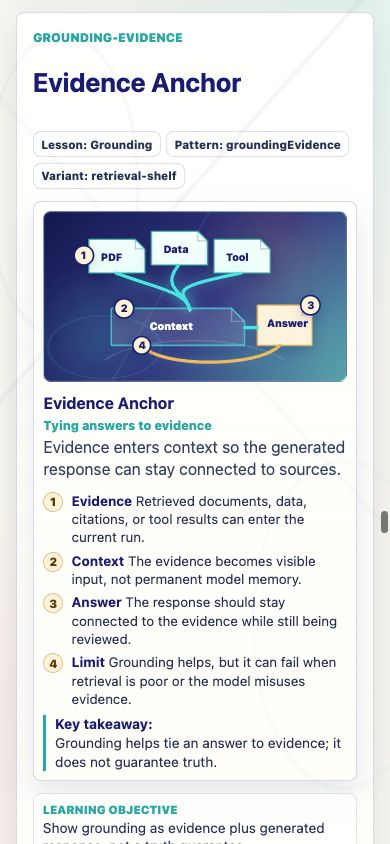
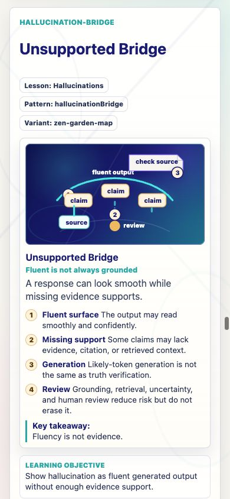
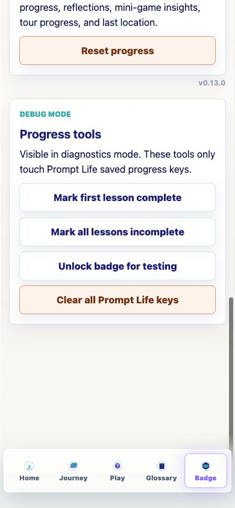

Prompt Life v0.13
Whole Journey Review + Content Freeze Candidate
Internal report generated 2026-06-04. This PDF wraps the response summary and screenshots for the v0.13 review and implementation pass.
What Changed
New Journey cardsAdded dedicated Grounding and Hallucinations cards after RAG and Retrieval.
New visualsAdded lightweight SVG/HTML visuals for Evidence Anchor and Unsupported Bridge.
Review routeAdded path, recommendation, source-needed, visual-needed, and core objective metadata.
Content freezeCreated v0.13 whole-Journey review, source plan, and v1 structure proposal.
RAG, Grounding, and Hallucinations now form a clearer sequence: retrieval puts evidence into context, grounding ties the answer to evidence, and hallucination literacy reminds learners that fluent output can outrun support.
Files Changed
src/main.tsxsrc/data/content.tssrc/components/VisualAids.tsxsrc/styles/global.cssREADME.mddocs/REVIEW_NOTES.mddocs/curriculum/JOURNEY_REVIEW_V0_13.mddocs/curriculum/CONTENT_FREEZE_CANDIDATE_V0_13.mddocs/curriculum/SOURCE_REVIEW_PLAN_V0_13.mddocs/curriculum/V0_13_CHANGE_LOG.mddocs/screenshots/v0-13-*.png
How To Run Locally
cd ~/Desktop/promptlife
npm install
npm run devOpen the local URL printed by Vite. For phone testing on the same Wi-Fi network, run npm run dev -- --host 0.0.0.0 and open the Network URL Vite prints.
What Is Done
- Grounding and Hallucinations are implemented as dedicated concise Journey cards.
- RAG remains a dedicated card and appears immediately before Grounding.
- The glossary includes Grounding, Hallucination, RAG, Retrieval, and the new Citation term.
- The review routes expose the v0.13 curriculum metadata and now scroll correctly on mobile-height windows.
- The visible app version is
v0.13.0under the Start over panel on Badge.
Verification
npm run typecheck: passed.npm run build: passed.npm run build:pages: passed.- Browser QA at 390px verified Journey placement, Grounding preview mode, glossary term presence, Badge version placement, review-route metadata, and review-route scrolling.
- Known build note: Vite reports a single app chunk over 500 kB after minification. No heavy dependency was added.
Next Three v0.2 Improvements
- Add Journey path filtering so Essential, Deep, and Ethics/Society can be explored without making all 38 cards feel required.
- Run the v0.13 source review plan and add source notes for environmental, labor, copyright, governance, benefit, RAG, grounding, and hallucination claims.
- Tighten How AI Learns and Risk vs Myth now that RAG, Grounding, and Hallucinations have dedicated cards.
Screenshots







v0.13.0.